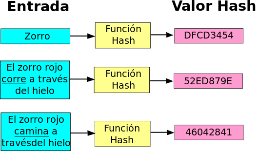

Introducción a la Seguridad Informática
Clase: 3
Instituto Educación IT
Instructor: Maximiliano Cañellas
Sobre el curso
Módulo 3/4: Introducción a la Seguridad Informática
Temas:
Criptografía · Algoritmos de hashing · Ataques de fuerza bruta · Tablas Rainbow · Técnicas de Salting
Entre otros ..
Criptografía: un resumen
Hasta ahora estudiamos:
- Conceptos generales de Seguridad Informática
- La historia de la criptografía
- Criptografía Simétrica
- Ventajas y desventajas de la criptografía Simétrica
- Ataques a los algortimos y a la clave
- Criptografía asimétrica
- Criptografía híbrida
Algoritmos de Hashing:
¿Qué son?
Un algoritmo o función hash es un método para generar claves que representen de manera biunívoca (no reversible) a un conjunto de datos o documento. Es una operación matemática que se realiza sobre este conjunto de datos de cualquier longitud, y su salida es una huella digital, de tamaño fijo e independiente de la dimensión de la cadena o documento original.
Un breve resumen
Algoritmos de Hashing:
Un esquema gráfico

Destaquemos dos puntos importantes del ejemplo
- Sin importar la longitud de la cadena de entrada el hash resultante que produce la función tiene el mismo largo.
- El más minimo cambio en la cadena produce un hash completamente distinto
Usos del hashing:
Autenticación en BD 1/3
En los sistemas informáticos, el almacenamiento seguro de la base de datos de usuarios y contraseñas suele ser un gran desafío. Imaginemos que debemos contar con una pequeña tabla para luego almacenarla, que tenga solamente dos campos "user" y "password":
| User | Password |
|---|---|
| Admin | test_System2 |
| David | Rosario2014 |
| Ana | 12345678 |
| José | jose1967 |
El problema de almacenar esta base es obvio ¿no?
¡Nuestros passwords se guardan en texto plano!
Usos del hashing:
Autenticación en BD 2/3
Nos desviamos un instante del hashing, apliquemos a nuestra base lo que aprendimos de cifrado simétrico.
La misma base, pero con cfirado AES-128 se vería así:
User
Password
Admin
ifH7cmHxw7qg3xDyYw4l/A==
David
7GGtk7dgSdLOby14gvbkkQ==
Ana
hsJz57bEUHNNobgLw7dP9A==
José
EIqS0avjiPIGgr9putDPcQ==
| User | Password |
|---|---|
| Admin | ifH7cmHxw7qg3xDyYw4l/A== |
| David | 7GGtk7dgSdLOby14gvbkkQ== |
| Ana | hsJz57bEUHNNobgLw7dP9A== |
| José | EIqS0avjiPIGgr9putDPcQ== |
Parece bastante seguro ¿no?
Pero este esquema también tiene un problema ¿cual es?
Conociendo el algoritmo de cifrado utilizado, los administradores del sistema por ejemplo, podrían conocer los passwords de todas las personas en esa base de datos.
Cifrado con: aesencryption.net
Clave: clase3
Usos del hashing:
Autenticación en BD 3/3
Ahora a nuestra base apliquemos un algoritmo de hashing conocido y probado: SHA-256. La base debería verse así:
User
Password
Admin
84843e3117b89c63124c37e8995b6bdf97cc9bd34e90d77c9e99a8ee6cac68b5
David
e34e432fc7bafc3790d46162826ff3fe934dea90e1f5e48b9c0bae17339146ed
Ana
ef797c8118f02dfb649607dd5d3f8c7623048c9c063d532cc95c5ed7a898a64f
José
7ec4dd185965fed23abde1d752479d88f6f8b91ec75a417ed6e92ff1e749730e
Este esquema es casi perfecto. ¿por qué?
Hashing: xorbin.com/tools/sha256-hash-calculator
| User | Password |
|---|---|
| Admin | 84843e3117b89c63124c37e8995b6bdf97cc9bd34e90d77c9e99a8ee6cac68b5 |
| David | e34e432fc7bafc3790d46162826ff3fe934dea90e1f5e48b9c0bae17339146ed |
| Ana | ef797c8118f02dfb649607dd5d3f8c7623048c9c063d532cc95c5ed7a898a64f |
| José | 7ec4dd185965fed23abde1d752479d88f6f8b91ec75a417ed6e92ff1e749730e |
¿por qué?
Usos del hashing:
Integridad de la información
Un uso muy importante del hashing es garantizar la integridad de los datos, esto es algo que se ve muchas veces en sitios web que proporcionan descargas de archivos grandes dando junto a estos la salida del hashing aplicada al archivo y la función usada.
Veamos un ejemplo
#Ejemplo de MD5 checksum en linux de index.html (esta presentación)
> md5sum index.html
> ce3d75e8bebe0e291c859e1faea6a027 index.html
El hashing del documento ce3d75e8bebe0e291c859e1faea6a027 representa la prueba de integridad del archivo ya que de modificar un solo bit de este, la función hashing (MD5), devolverá una cadena completamente distinta.
Otro caso Bitcoin+hashing: proofofexistence.com
Otros conceptos sobre hashing:
Colisiones
Los algoritmos de hashing pueden producir colisiones
¿Qué es esto?
En informática, una colisión de hash es una situación que se produce cuando dos entradas distintas a una función de hash producen la misma salida. Es matemáticamente imposible que una función de hash carezca de colisiones, ya que el número potencial de posibles entradas es mayor que el número de salidas que puede producir un hash. Sin embargo, las colisiones se producen más frecuentemente en los malos algoritmos.
Nos tomamos un momento para discutir la implicancia de las colisiones
Hashing:
Ataques por fuerza bruta
Teniendo el hash de una contraseña, una forma de obtenerla sería probar con todas las combinaciones posibles, hasta dar con la correcta. A este método se le conoce como “fuerza bruta” porque se utiliza la fuerza en lugar de la lógica.
Si utilizamos solamente letras minúsculas y números, tendremos un juego de 36 caracteres (26 letras + 10 números). Si asumimos que la contraseña posee exactamente 8 caracteres, podemos obtener la cantidad de contraseñas posibles realizando el siguiente cálculo: 36^8 = 2821109907456
Fuerza Bruta:
El esquema
El esquema de ataque es el siguiente:

Claramente este ataque es lento y costoso, veamos otras opciones.
Hashing:
Ataques por diccionario
Método de ataque utilizando un diccionario
Este tipo de ataque es similar al de fuerza bruta pero, en lugar de tratar con todas las contraseñas posibles, se buscan palabras dentro de un diccionario. Es un ataque mucho más rápido (porque se prueban muchísimas menos combinaciones) aunque, si la contraseña es compleja, tiene muy pocas probabilidades de éxito.
Algunos diccionarios blackploit.com
Este método también es, salvo raras ocasiones, inviable. Veamos otra opción.
Hashing:
Rainbow Tables
¿Qué son?
Las tablas Rainbow son tablas de consulta que ofrecen un compromiso entre tiempo y espacio para obtener claves en texto simple a partir del resultado de una función de hash.
El proceso completo: kuliukas.com/RainbowTables
Unos puntos a tener en cuenta
Buenas prácticas: Salting
¿qué es?
Se denomina salt a un fragmento aleatorio que se le añade a un hash dado para conseguir mayor fortaleza en la contraseña. Los datos con salting complican los ataques de diccionario que cifran cada una de las entradas del mismo: cada bit duplica la cantidad de almacenamiento y computación requeridas. Esta técnica también ayuda contra las tablas rainbow ya que extienden la longitud y con ello la complejidad de la contraseña
Para mayor seguridad, el valor de salt se guarda en secreto, separado de la base de datos de contraseñas. Esto aporta una gran ventaja cuando la base de datos es robada
Veamos esto con más detalle
Buenas prácticas: Salting
Por ejemplo, supongamos que la clave secreta (hasheada) de un usuario es robada, y se sabe que usa una de 200.000 palabras inglesas como contraseña. El sistema usa salting de 32 bits. La clave "salteada" es ahora la contraseña original unida al salting de 32 bits.
A causa de esto, los hashes precalculados del atacante carecen de valor. Deberá calcular el hash de cada palabra junto con cada una de las 2 a la 32 (4,294,967,296) posibles combinaciones de salts hasta que se encuentre una coincidencia. El número total de posibles entradas se puede obtener multiplicando el número de palabras en el diccionario por el número de posibles salts :2 a la 32 x 200000 = 8.58993459 x 10 a la 14. Esto es igual a 860 billones de hashes, en lugar de sólo 200.000.
Algoritmos de hashing
Herramientas
- Calculadora de hashes online regenboog.yellosoft.us
- Cain & Abel (legacy) oxid.it/cain.html
- Pyrit VGA WPA/WPA2 cracking code.google.com/p/pyrit
- Ophcrack ophcrack.sourceforge.net
- RainbowCrac project-rainbowcrack.com/